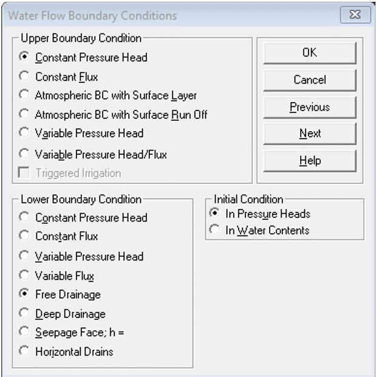

Material to support teaching in Environmental Science at The University of Western Australia
Material to support teaching in Environmental Science at The University of Western Australia
Units ENVT3361, ENVT4461, and ENVT5503
ENVT5503 Hydrus-1D Beginners` Guide
Remediation of Soil and Groundwater
Andrew Rate
2025-12-05
Â

Figure 1: Animation
representing simulated solute transport, made with the
gganimate
R package. For the R code to
make this animation and some background information,
go to https://ratey-atuwa.github.io/cybloRg/pulse.html.
Â
Getting Started
This guide should enable you to create a working simulation of solute transport using Hydrus-1D.
Start by opening the Project Manager, and click the
New button:

In the New Project dialog box, type the name (and
optional description), then click OK:

This should open the input dialog (the sub-window name
will be the name you gave it above under New Project).
- Double-click on the items in the
Pre-processingpane (left) to open them, which allows you to change input parameters. - The right side of the window (
Post-processing) will have items in it after a Hydrus-1D project is run
Double-clicking on Main Processes gives a new dialog box
– you should make sure that you check the ☑Solute Transport
checkbox:
You can just keep clicking the Next button to get to
each part of the input set-up:
(Remember you can click the Help button for assistance on
any screen!)
Â
Hints for parameter selection in each input dialog
The instructions below get you a very basic simulation with a single substrate ("soil") material, reacting with a single solute. The reaction is defined by simple partitioning using a Kd value, and equilibrium is achieved instantaneously.
Geometry Information
- Set
Length Unitsto desired value
(we recommend m, but cm is OK)
- Use one Soil Material for simple transport, but
two or more for reactive barriers etc. - For horizontal transport use
Decline from Vertical...of ≤ 0.1 - Set
Depthto desired value – this represents our flow path length, so choose something realistic for groundwater! (e.g. if your units are cm, Depth needs to be ≥ 1000)
Time Information
- Set Time Units to desired value (days is OK)

- Set Final Time to match column length and (later) hydraulic conductivity
- You can scale Initial/Minimum/Maximum Time Step up or down depending on whether you increase or decrease Final Time
- Leave other settings as default (for now)
You may need to return to the Time Information dialog
later depending on the output of your initial simulation.
Â
Â
Â
Print Information
- Set Number of Print Times to enable plotting profile information at different times (e.g. 5-10)
- Then click
Select Print Times...and clickDefault(you can try the other settings later)

Â
Iteration Criteria
- Leave these at their default settings for now (we don`t usually need to change these values).
Â
Soil Hydraulic Model
- Leave at default settings for now (the van Genuchten model is a good and widely-used option for relating soil physical properties to the water retention curve.)

Â
Water Flow Parameters
- Select the desired pre-set for each soil material from the
Soil Catalog
Qr= Residual soil water content, qr
Qs= Saturated soil water content, qs
Alpha= Parameter a in the soil water retention function [L−1]
n= Parameter n in the soil water retention function
Ks= Saturated hydraulic conductivity, Ks [LT−1]
l= Tortuosity parameter in the conductivity function [-]
The individual values can be set manually too. For a
permeable reactive barrier, Ks should not
be much different from the surrounding soil material – we want the
barrier to be permeable.
Â
Water Flow Boundary Conditions
- Leave at default settings for now

Â
Solute Transport
- the default
Mass Unitsare mmol, but we recommend changing to g.
If we set the length units to m earlier, this makes our concentration units g/m3, which is equivalent to mg/L - Make sure
Number of Solutes= 1 - Choose
Pulse Durationto be a fraction (e.g. ≤ 0.1 × theFinal Timeset earlier)
Â
Solute Transport Parameters
- You can leave these at defaults, but FYI:
(dimensions are in square brackets [ ] )
Soil Specific Parameters:
Bulk.d. = Bulk density, r
[ML−3]
Disp = Longitudinal dispersivity, DL
[L]
Frac = ...fraction of adsorption sites with instantaneous
sorption...; Set = 1 for equilibrium transport
ThIm = Immobile water content. Set equal to 0 when
physical nonequilibrium is not considered.
Solute Specific Parameters:
Diffus.W = diffusion coefficient in water,
Dw [L²T−1]
Diffus.G = diffusion coefficient in soil air,
Da [L²T−1]
Â
Solute Transport and Reaction Parameters
- Set partition coefficient
Kd> 0 for reactive transport (leaveKd= 0 for non-reactive) – this is important for features like a permeable reactive barrier - for more advanced simulations (see below),
add a reaction rate constant (
Alpha) parameter - Click the
Helpbutton for details!

Â
Solute Transport Boundary Conditions
Bound. Cond> 0 for each solute (Sol. No.) – this is the initial solute concentration, so it can`t be zero!- Ensure concentrations are realistic and in the correct units set
under
Dimensions
- Ensure concentrations are realistic and in the correct units set
under
- Click the
Helpbutton for details of the other options.

Â
Do you want to run PROFILE application ?
- Yes, you do! Click [OK].

Â
Profile Information dialog
Click
Pressure Head..., then click theEdit Conditionbutton, and select the whole column by clicking top then bottom, then setTopandBottomvalue to 0 (zero) i.e. saturated with waterYou can also set other soil parameters, e.g. material types and observation points – see the video!
Make sure you click save 💾 (you might need to press the [
esc] key first), check the soil profile table display, then you are ready to run Hydrus – see the video!
Â
👉When the
Profile Information window is saved and closed, the
Soil Profile Summary will open automatically.
Soil Profile Summary
This is a good opportunity to check that the profile is set up the way you want it to be.
- for groundwater, all values in the
h [m]column should be zero (you might haveh [cm]depending on your length units) - scroll down the
Matcolumn to check that all soil materials are at the depth/distance (z [m]) that you want them to be (e.g. the location of a permeable reactive barrier) - you can edit the values directly in the
Soil Profile Summarytable
Running your simulation
When you click Next in the
Soil Profile Summary, the Hydrus-1D program will ask
Do you want to run HYDRUS-1D application ? Usually you do,
so click OK 😊.
Â
Near the bottom of the output, look for the text
Calculations have finished successfully. If it's there,
press Enter or just close the window.
After a successful Hydrus-1D simulation run, you can use the options in the post-processing window to visualise the output within Hydrus-1D. Alternatively, you can read the data file(s) into Excel® or R and make better graphs!
For many applications we would want to include more complexity into our simulation. For example, in the ENVT5503 class, we set an assignment to simulate remediation of groundwater contamination with a permeable reactive barrier (PRB). In this case we should consider including:
- at least 2 'soil' materials with different properties to represent
the aquifer material and the PRB (see the
Geometry Informationdialog)- this would be further defined as a depth range in the
Material Distributionoptions of theProfile Informationdialog
- this would be further defined as a depth range in the
- a One-site sorption model (Chemical Nonequilibrium) (in the
Solute Transportdialog) - a diffusion coefficient for our solute in water
(
Diffus. W.in theSolute Transport Parametersdialog) - a
Frac = 1value of zero to match non-equilibrium conditions (in theSolute Transport Parametersdialog) - a non-zero
Kdvalue for the material representing the PRB (and potentially a lowerKdvalue for the surrounding material) in theSolute Transport and Reaction parametersdialog - an
alphavalue (first-order reaction rate constant) for each material (in theSolute Transport and Reaction parametersdialog - scroll to the right;alphais at the end)
Â
Output files
File name | Contents |
|---|---|
Nod_Inf.out | Separate data matrices at selected `Print times` during simulation. |
Obs_Node.out | Side-by side data matrices for each node depth. |
Solute1.out | Single data matrix for each solute. Contains columns for time, fluxes and concentrations (including cumulative values) at start of flow path (Top), Root zone, end of flow path (Bot). |
Â
More detail is available in the Hydrus-1D manual. We recommend the Hydrus-1D Tutorial (Rassam et al. 2018). Various versions of Hydrus manuals are available at https://www.pc-progress.com/, the most relevant probably being Šimůnek et al. (2008).
Â
Reading HYDRUS-1D data into R
Users of Hydrus-1D either need to use the limited graphics in
Hydrus itself, open the output files in Excel, or devise a way of using
more flexible software like R.
Reading data copied from a Hydrus-1D plot
This is an easier alternative to reading the
data stored in the Nod_Inf.out file (described below), and
it′s what we recommend.
Right-click on Hydrus-1D plot of Profile Information: Concentration, and select Copy; this will copy the data table for the plot in tab-separated format.
Â
Â
Â
Â
Â
Then run the following code:
On some Mac computers this does not work, giving an error message
such as:
Error in file(file, "rt") : X11 module cannot be loaded
In that case, copy the data from the Hydrus-1D plot into Excel, and
save as a .csv file (e.g.
hydrus1.csv) into your current RStudio working
directory.
Then just use read.csv to input the Hydrus-1D data:
Then it's useful to input some of the Hydrus-1D information
(Final Time (≡ total time), and number of
Print Times):
# specify Final Time here
# (from Hydrus-1D 'Time Information' input)
# 👇
ft <- 365 # run this line!
# specify number of Print times here
# (from Hydrus-1D 'Print Information' input)
# 👇
pt <- 10 # run this line!
(simTimes <- seq(0,ft, len=pt+1))## [1] 0.0 36.5 73.0 109.5 146.0 182.5 219.0 255.5 292.0 328.5 365.0colnames(hydrus0)[seq(2,ncol(hydrus0),2)] <- paste("Day",round(simTimes))
colnames(hydrus0)[seq(3,ncol(hydrus0),2)] <- paste0("Dist",round(simTimes))Then, reformat the data for easier plotting using
melt() from the reshape2 package. If
Distance is negative, we make it positive. To enhance
plots, strip off the last concentration at each time step.
library(reshape2)
# convert to long-form using melt()
hydrus1 <- melt(hydrus0[,2:ncol(hydrus0)],
id.vars = "Dist0",
measure.vars = paste("Day",round(simTimes)))
colnames(hydrus1) <- c("Distance","Time","Concentration")
# reverse sign of distance variable
if(min(hydrus1$Distance)<0) hydrus1$Distance <- -1*hydrus1$Distance
# make final concs NA
hydrus1[which(hydrus1$Distance==max(hydrus1$Distance)),"Concentration"] <- NACheck the data file:
## 'data.frame': 1111 obs. of 3 variables:
## $ Distance : num 0 0.2 0.4 0.6 0.8 1 1.2 1.4 1.6 1.8 ...
## $ Time : Factor w/ 11 levels "Day 0","Day 36",..: 1 1 1 1 1 1 1 1 1 1 ...
## $ Concentration: num 0 0 0 0 0 0 0 0 0 0 ...Plot the data (option 1: symbols only)
We plot the concentration (y-axis) vs. distance (x-axis) since this is relevant to horizontal transport, such as flow of groundwater containing solute(s).
par(mar=c(4,4,1,1), mgp=c(1.7,0.3,0), tcl=0.25,
font.lab=2, cex.lab=1.2)
palette(c("black",viridis::plasma(pt, alp=0.7)))
with(hydrus1, plot(Distance, Concentration, type="b",cex=1,
pch=rep(c(21:25),3)[Time],
bg=seq_along(simTimes)[Time],
xlab="Distance (m)",
ylab="Solute concentration (mg/L)"))
legend("topright", bty="n", inset=0.02, ncol=2,
title=expression(italic("Simulation times [days]")),
legend=round(simTimes[-1]), pt.bg=seq_along(simTimes)+1,
pch=c(22:25,21:25,21), pt.cex=1.2)Figure 2: Plot of simulated solute concentration vs. horizontal distance for each simulation time step (showing individual simulation points), using Hydrus-1D
Â
Plot the data (option 2: just the lines)
If you don't like all the symbols in the plot above, try the following (or, you can adapt the code to plot concentration on the horizontal axis - see below):
par(mar=c(4,4,1,1), mgp=c(1.7,0.3,0), tcl=0.25,
font.lab=2, cex.lab=1.2)
palette(c("black",viridis::turbo(pt)))
with(subset(hydrus1, hydrus1$Time==levels(hydrus1$Time)[1]),
plot(Concentration ~ Distance, type="l",
ylim=c(0, max(hydrus1$Concentration, na.rm=TRUE)),
xlab="Distance (m)", ylab="Solute concentration (mg/L)") )
for (i in 2:(pt+1)){
with(subset(hydrus1, hydrus1$Time==levels(hydrus1$Time)[i]),
lines(Concentration ~ Distance, col=i,lwd=3,lty=i))
}
legend("topright", bty="n", inset=0.02, ncol=2,
title=expression(italic("Simulation times [days]")),
lty=seq_along(simTimes)+1, seg.len=4.5, legend=round(simTimes[-1]),
col=seq_along(simTimes)+1, pch=NA, lwd=rep(3,pt),
x.intersp=0.5)Figure 3: Plot of simulated solute concentration vs. horizontal distance for each simulation time step (showing smooth lines only), fig.height=4, fig.width=8, paged.print=FALSE, using Hydrus-1D
Â
Of course you can use ggplot if you want!
Note that the legend uses the levels names for the factor
Time that we made after setting the Final Time and number
of Print Times (above).
require(ggplot2)
ggplot(hydrus1) +
geom_line(aes(x=Distance, y=Concentration, colour=Time,
linetype=Time), linewidth=1.5) +
scale_color_manual(values=c("grey",viridis::turbo(10, beg=0.05))) +
guides(color=guide_legend(title="Simulation times")) +
guides(linetype=guide_legend(title="Simulation times")) +
labs(x="Distance (m)", y = "Concentration (mg/m³)") +
theme_bw() +
theme(axis.title = element_text(face="bold", size=14),
legend.key.width = unit(4, "line"),
legend.title = element_text(face="bold", size=12))
Figure 4: Plot of simulated solute concentration vs. horizontal distance
for each simulation time step, using Hydrus-1D (the ggplot
version).
Â
Reading data in Hydrus-1D output files
Here's my code to read the node (Profile) information output files
from Hydrus-1D (Nod_Inf.out in the relevant Hydrus-1D
project folder) into an R data frame.
# R code to read Hydrus-1D Nod_Inf.out files into an R data frame
# set full path to Hydrus-1D project directory (folder)
# -=-=-=-=- EDIT THIS TO MATCH THE FOLDER ON YOUR COMPUTER ! -=-=-=-=-
PCdir <- paste0(MyPC,"ENVT5503/Hydrus1D ENVT5503/PRB")
# read Nod_Inf.out file into a vector of character (text) strings
Nod_Inf_out <- readLines(paste0(PCdir,"/","Nod_Inf.out"))
# View(Nod_Inf_out) # optionally check what we just read
# find indices of some rows we want to delete
head_rows <- grep("Node", Nod_Inf_out)
# use indices to delete the rows
Nod_Inf_out <- Nod_Inf_out[-c(seq(1,7),head_rows-2, head_rows-1,
head_rows+1, head_rows+2)]
# find indices of some more rows we want to delete
ends <- grep("end",Nod_Inf_out)[-1*NROW(grep("end",Nod_Inf_out))]
# use indices to delete the rows
Nod_Inf_out <- Nod_Inf_out[-c(ends, ends+1, ends+2)]
# find indices of rows that have the Hydrus-1D print times
time_rows <- grep("Time:", Nod_Inf_out)
# extract the rows with Hydrus-1D print times into a vector
timz <- Nod_Inf_out[time_rows]
# get rid of text around the Hydrus-1D print time values...
timz <- gsub("Time: ","",timz)
timz <- gsub(" ","",timz)
# ...and convert to numbers...
timz <- as.numeric(timz)
# ...then delete the Hydrus-1D print time rows
Nod_Inf_out <- Nod_Inf_out[-c(time_rows)]
# find the rows with column names for each block of print data...
head_rows <- grep("Node", Nod_Inf_out)
# and remove all except the first one
Nod_Inf_out <- Nod_Inf_out[-c(head_rows[-1])]
# strip out all but single spaces from data...
while(NROW(grep(" ", Nod_Inf_out)) > 0) {
Nod_Inf_out <- gsub(" "," ", Nod_Inf_out)
}
# ...and (finally!) delete the very last row (an 'end' statement)
Nod_Inf_out <- Nod_Inf_out[-1*NROW(Nod_Inf_out)]
#
# write the edited output to a file...
writeLines(Nod_Inf_out, con="./NodInf3.out")
# ...and read the file in as space-delimited
node_data <- read.table(file = "NodInf3.out", header = TRUE, sep = " ")
# the is a blank column 1; rename it to "Time"
colnames(node_data)[1] <- "Time"
# use the print times vector to make a vector with
# the relevant time repeated for each block
timz0 <- rep(timz[1], NROW(node_data)/NROW(timz))
for (i in 2:NROW(timz)) {
timz0 <- append(timz0, rep(timz[i], NROW(node_data)/NROW(timz)))
}
# replace the Time colum with the vector we just made...
node_data$Time <- timz0
# ...and convert Time to a factor
node_data$Time <- as.factor(node_data$Time)
# remove temporary objects...
rm(list = c("i","head_rows","Nod_Inf_out","timz","timz0","ends"))
# ...and check the cleaned-up data
str(node_data)Plot concentration vs. depth
This is the type of plot we would use for vertical transport, such as leaching through a soil profile.
# check it with a plot
# plot as concentration vs. depth
palette(c("black",viridis::rocket(6, beg=0.15, end=0.7)))
par(mar = c(1,4,4,1), mgp = c(1.7,0.3,0), tcl = 0.3, font.lab=2)
plot(-1*(node_data$Depth) ~ node_data[,13],
type = "l", col = 1,
xlim = c(0, max(node_data[,13], na.rm=T)),
ylim = c(-1*min(node_data$Depth, na.rm=T), 0),
subset = node_data$Time==levels(node_data$Time)[1],
xaxt = "n", xlab = "", ylab = "Depth (cm)")
axis(3)
mtext("Concentration", side = 3, line = 1.7, font = 2)
symz <- c(15,19,17,8,12,9)
for (i in 2:nlevels(node_data$Time)) {
points(-1*node_data$Depth ~ node_data[,13], col = i,
subset = node_data$Time==levels(node_data$Time)[i],
type = "o", pch = symz[i-1], cex = 0.6)
}
legend("bottomright", legend = levels(node_data$Time),
col = seq(1,nlevels(node_data$Time)),
pch = c(NA,symz),
lwd = 1,
pt.cex=0.85, bty = "n", inset = 0.02,
title = expression(bold("Time (days)")))Figure 5: Plot of simulated solute concentration vs. vertical depth for each simulation time step, using Hydrus-1D
Â
Plot as concentration vs. horizontal distance
This type of plot is relevant to horizontal transport, such as flow of groundwater containing solute(s).
palette(c("black",viridis::plasma(6)))
symz <- rep(21:25,2)
par(mar = c(4,4,1,1), mgp = c(1.7,0.3,0), tcl = 0.3, font.lab=2)
node_data$Distance <- -1*node_data$Depth
plot(node_data[,13] ~ -1*node_data$Distance,
type = "l", col = 1,
ylim = c(0, max(node_data[,13], na.rm=T)),
xlim = c(0, max(node_data$Distance, na.rm=T)),
subset = node_data$Time==levels(node_data$Time)[1],
ylab = "Concentration", xlab = "Distance (cm)")
for (i in 2:nlevels(node_data$Time)) {
points(node_data[,13] ~ -1*node_data$Distance, bg = i,
subset = node_data$Time==levels(node_data$Time)[i],
type = "o", pch = symz[i-1], cex = 1)
}
legend("topright", legend = levels(node_data$Time),
pt.bg = seq(1,nlevels(node_data$Time)),
pch = c(NA,symz),
lwd = 1,
pt.cex=1, bty = "n", inset = 0.02,
title = expression(bold("Time (days)")))
Figure 6: Plot of simulated solute concentration vs. horizontal distance for each simulation time step, using Hydrus-1D
Â
References
Rassam, D., J. Šimůnek, D. Mallants, and M. Th. van Genuchten, The HYDRUS-1D Software Package for Simulating the One-Dimensional Movement of Water, Heat, and Multiple Solutes in Variably-Saturated Media: Tutorial, CSIRO Land and Water, Adelaide, Australia, 183 pp., ISBN 978-1-4863-1001-2, 2018. https://www.pc-progress.com/Downloads/Public_Lib_H1D/HYDRUS-1D_Tutorial_V1.00_2018.pdf
Šimůnek, J., M. Šejna, H. Saito, M. Sakai, and M. Th. van Genuchten, The Hydrus-1D Software Package for Simulating the Movement of Water, Heat, and Multiple Solutes in Variably Saturated Media, Version 4.0, HYDRUS Software Series 3, Department of Environmental Sciences, University of California Riverside, Riverside, California, USA, pp. 315, 2008. (PDF 2.7MB)
Â
R packages
Garnier S, Ross N, Rudis R, Camargo AP, Sciaini M, Scherer C (2024).
viridis(Lite) - Colorblind-Friendly Color Maps for R.
viridis package version 0.6.5. https://sjmgarnier.github.io/viridis/
Wickham, H. (2007). Reshaping Data with the reshape
Package. Journal of Statistical Software,
21(12), 1-20. URL http://www.jstatsoft.org/v21/i12/.
Wickham, H. (2016). ggplot2: Elegant Graphics for
Data Analysis. Springer-Verlag: New York. https://ggplot2.tidyverse.org
Â
CC-BY-SA • All content by Ratey-AtUWA. My employer does not necessarily know about or endorse the content of this website.
Created with rmarkdown in RStudio. Currently using the free yeti theme from Bootswatch.